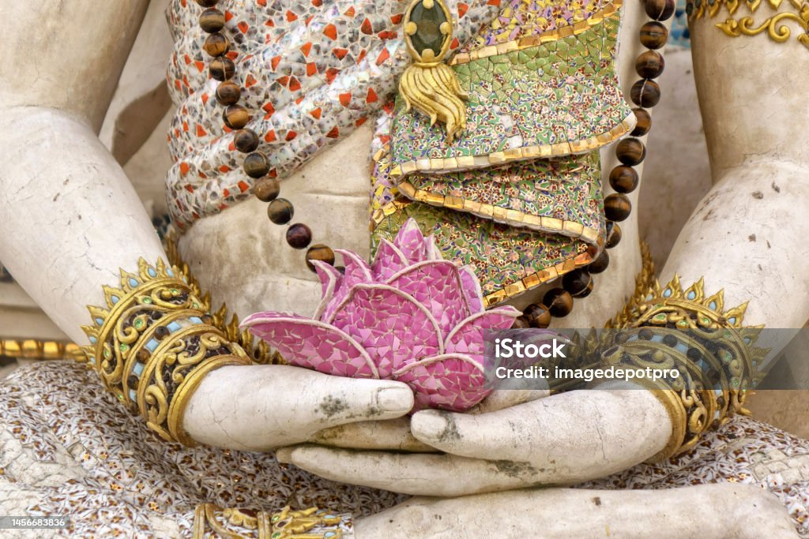

Психологічна сторінка "Життя без тривоги та депресії"
На нашому сайті ми рекомендуємо різноманітні методи та техніки для того, щоб ви могли ефективно справлятися із стресом та зберігати своє психологічне благополуччя. Спільно з нашими фахівцями ви можете ознайомитися з наступними способами розслаблення та розвантаження:
- Фізична активність
- Медитація
- Індивідуальні консультації:
- Проблеми спілкування
- Вікові труднощі
- Криза трьох років
- Підліткова криза
- Сімейні проблеми
- Аромотерапія
- Мистецтво та творчість
Зроби своє життя кращим та вільним від стресів!
Фізична активність
Регулярні фізичні вправи допомагають вивільнювати ендорфіни, які підвищують настрій та знижують стрес. Вони також підтримують загальне фізичне здоров'я.
Індивідуальні консультації
Наші психологи готові надати вам індивідуальну підтримку та поради з питань релаксації та стресу.
Вони допоможуть вам розуміти ваші емоції та знаходити ефективні способи їх контролю.
Мистецтво та творчість
Зайняття мистецтвом, музикою та іншими творчими видами діяльності можуть бути відмінним способом виразити свої емоції та розвантажитися.
За бажанням вправи можна виконувати самостійно.